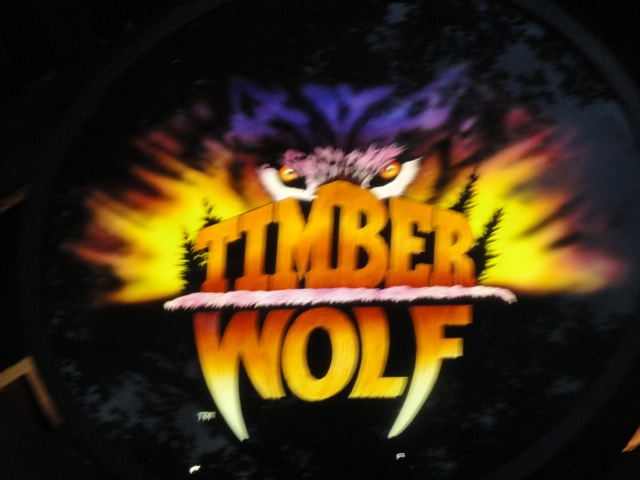

| |
Timber Wolf Review

We're here at Worlds of Fun and todays ride we'll be reviewing is Timber Wolf. Once you get in the cars and pull down the lap bars and buckle the seatbelt, you're on your way. You roll out of the station and head right up the lifthill. While climbing up the lifthill, you get a good view of Mamba. But that's not important as we get up the lifthill and turn to the left, getting ready to go down the first drop. We then roll down the first drop. It's actually a really fun first drop that gets up to speed quickly. We then rise up into the turnaround. But instead of just a nice cruise around the turn, we actually get some laterals, though some straight track appears after the turn. However, we roll through that quickly and went down another drop, which actually gives us some mild ejector air, which is quite a nice suprise. We then rise up into a nice airtime hill, that also takes us to another turn, a very good combination. We rush through a small little hill that gives us absolutely no airtime at all before rising up into a helix. At first it kicks ass as we enter it fast and get a good slam with some laterals. But as we keep turning, the laterals keep getting weaker, and the ride keeps getting slower. When we finally ask ourselves if Timber Wolf is going to valley, we make it to the end of the helix and into a small drop. That small drop keeps us moving again and leads into a small airtimeless hill before we turn again. The turn is weak and that just leads up another hill where we rise up into the under half of the original turnaround. Except where that was a decent turnaround, this just bores us. Not even the rowing trick would be entertaining here. We then dip back down to the ground before going through a small dip and making another large turn. Timber Wolf then has 2 more bunny hops. Two more chances to make us smile. And, what a suprise. Fail and Fail. We then reach the brake run. While I will say that Timber Wolf isn't as bad as people say it is, it's simply not that great of a ride, even though the first half is fun. But that's not enough to make your woodie good. And besides, we've got Prowler at Worlds of Fun. So just stick with that.
6/10
Location: Worlds of Fun
Opened: 1989
Built by: Dinn Coorperation
Last Ridden: August 6, 2010
Timber Wolf Photos
|